Pedro Saldaña
Un deporte de nicho con un público que muchas marcas buscan y pocas saben alcanzar.
reproducciones en 8 meses de trabajo con Pro Motion
su reel más visto frente a su número de seguidores
publicaciones entre febrero y octubre de 2023
reels con más de 10.000 reproducciones
Por qué una marca lo elegiría
Jinete de salto ecuestre de Cuenca, en la equitación desde los 4 años. Junto a su yegua Coral Z compitió en canchas de hasta 1,45 m y en 2023 se despidió del país con dos primeros lugares en el Concurso Nacional, antes de continuar su formación en Estados Unidos. Su caso demuestra que una disciplina vista como de poca visibilidad conecta con un público de alto valor: familias, clubes y marcas de cuidado animal, agro y banca.
- Feb 20231.er lugar en el Grand Prix 1,40 m y en la Abierta A 1,35 m, concurso zonal en el Cuenca Tenis y Golf Club (declarado)
- Mar 20235.º lugar en la categoría CSI 1* 1,40 m de la VI Copa Internacional Mitad del Mundo, Quito (declarado)
- May 20231.er lugar en la Abierta A 1,35 m del V CHOP zonal (declarado)
- Jun 2023Invitado al conversatorio sobre patrocinio deportivo en la Cámara de Comercio de Cuenca
- Jul 20231.er lugar en Preliminar Prix 1,20 m y Mini Prix 1,30 m del VII Concurso Nacional de Salto (declarado)
- Ago 2023Nueva etapa en Delaware Valley University, Estados Unidos
Lo que construimos juntos
Cobertura en tiempo real, activaciones con marcas, arte gráfico y resúmenes de carrera. Solo piezas creadas en colaboración con Pro Motion.
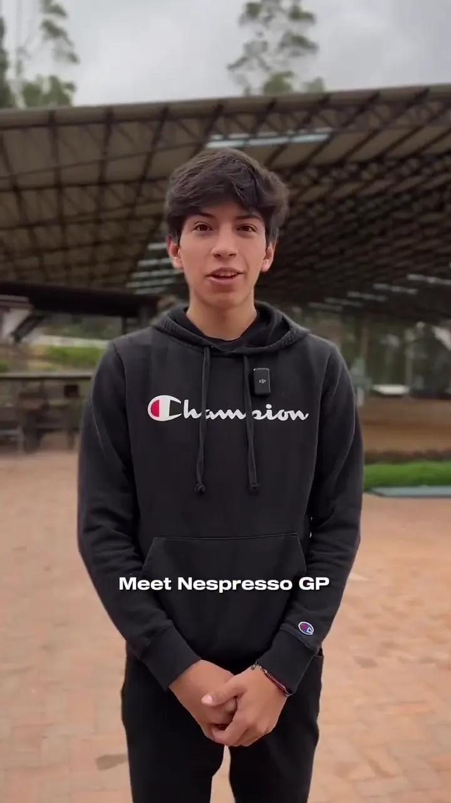

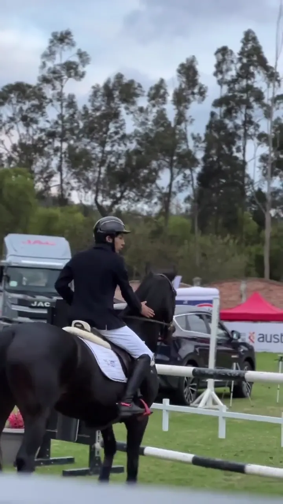
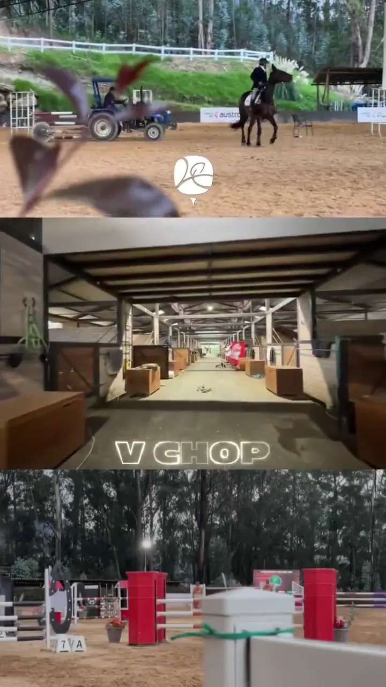
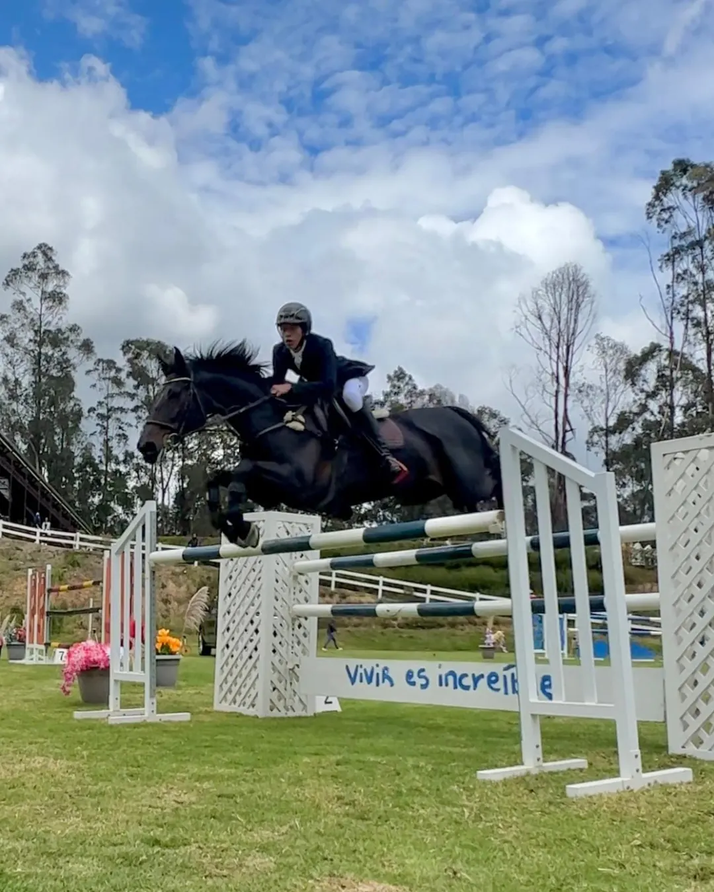
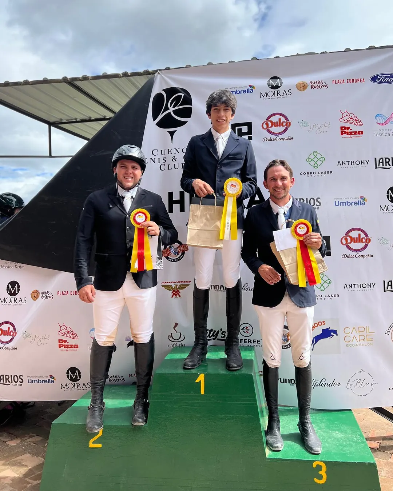
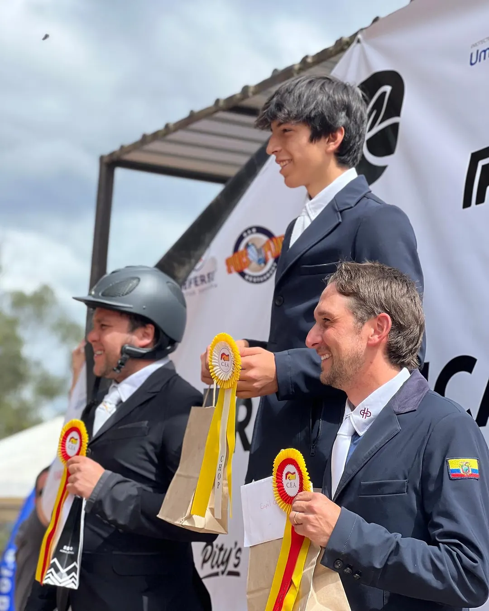
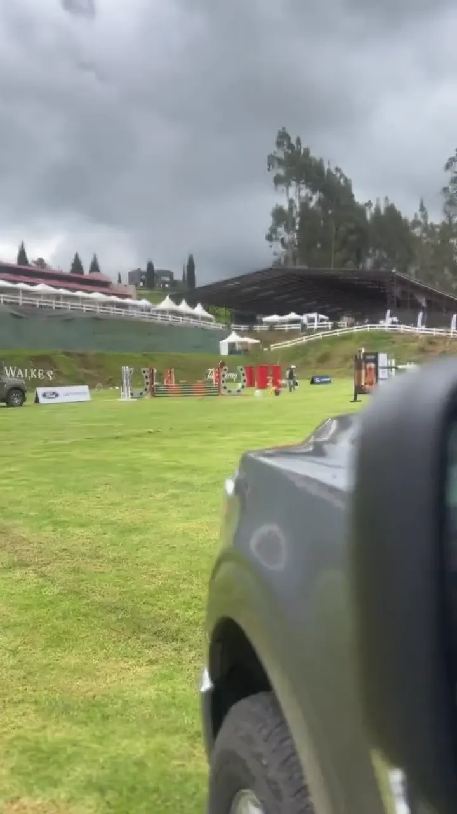
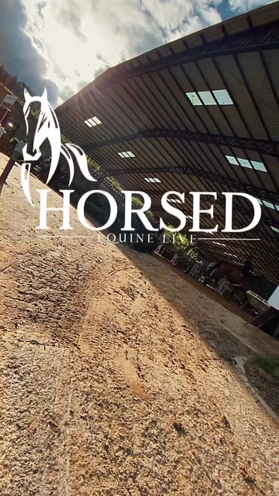
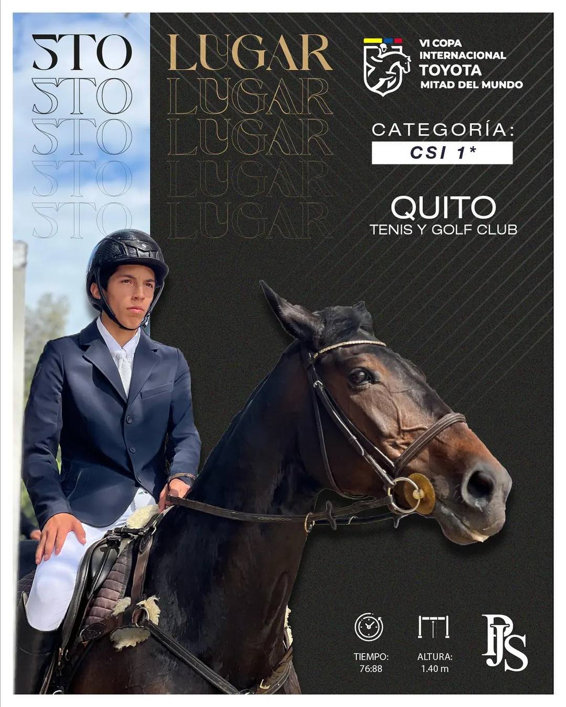
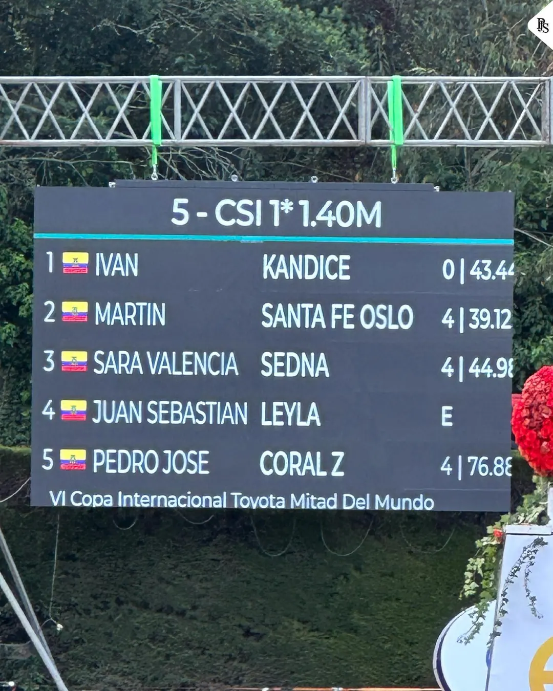
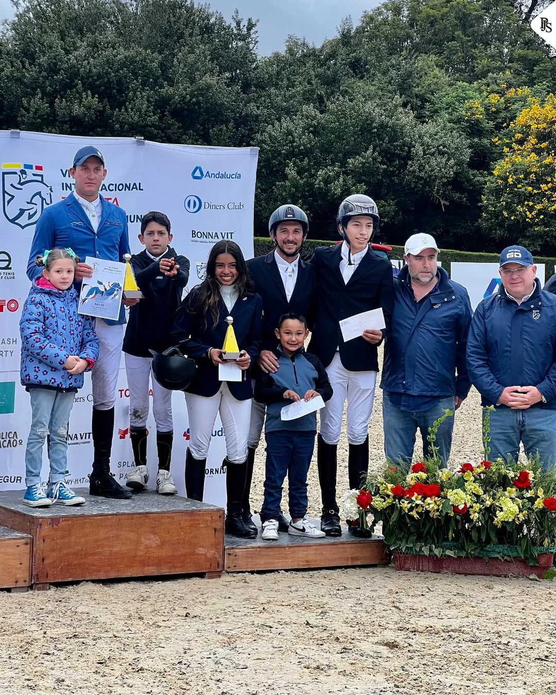
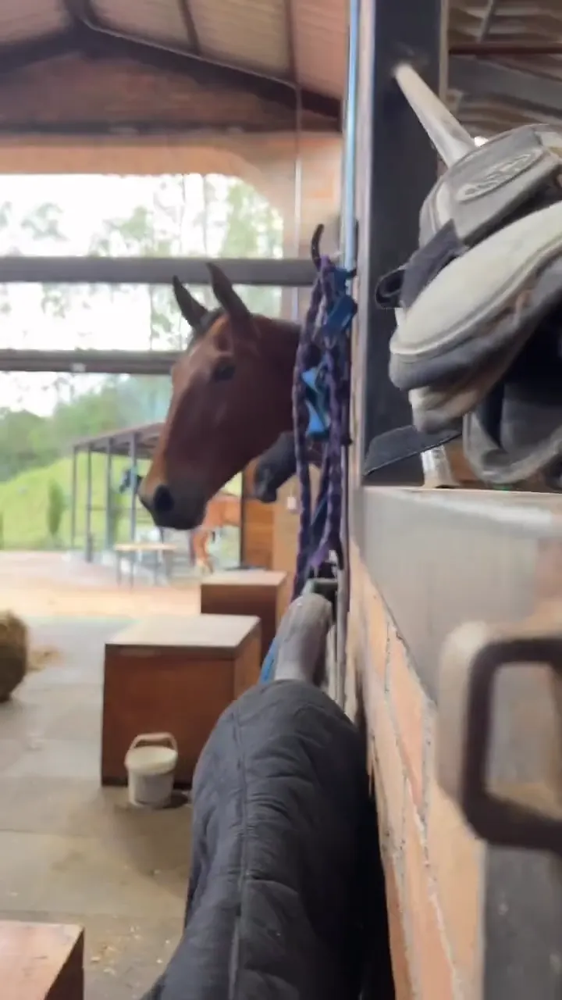
Datos de Instagram al 21 de octubre de 2026 · @pro_motion.ec
¿Qué marca encaja con Pedro?
Toca un sector para ver una idea de activación basada en lo que su contenido ya demuestra.
Elige un sector.


Caso de estudio elaborado por Pro Motion Sport Marketing con datos públicos de Instagram, consultados en noviembre de 2026, de las publicaciones entre el 13 de febrero y el 4 de octubre de 2023. Los resultados marcados como “declarado” fueron publicados por el deportista. Es un proyecto inactivo y no implica un acuerdo comercial vigente. Los logros marcados como “declarado” fueron entregados por el deportista o su equipo. El puntaje ProMatch mide la preparación comercial observada en el contenido, no la probabilidad de conseguir un auspicio, y no implica un acuerdo comercial vigente.
Diseñemos una activación con Pedro
Recibe una propuesta de activación con entregables, calendario y rango de inversión.